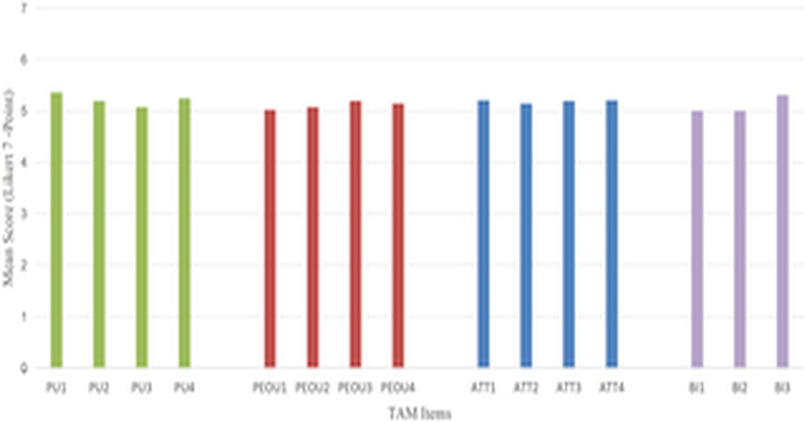

Разработка и оценка настольной VR серьезной игры для обучения цветовой композиции в базовом дизайнерском образовании
jingru Sun, Jingru Zhang, Weichang Chen, Jingjing Fan, Fang Hao, Huasheng Lai В последние годы все большее внимание в образовании в области искусства и дизайна уделяется иммерсивным и интерактивным технологиям.
Настольная виртуальная реальность (VR) предлагает недорогую и доступную альтернативу для обучения в классе, но ее использование в обучении цветовой композиции остается недостаточно изученным.
Это исследование было направлено на разработку и оценку BD-VRG, конструктивистской настольной VR-серии